| |
|
ISDIM
|
Bir projede Ana Güzergah, Bağlantı Yolları Güzergahı, Servis Yolu Güzergahı, Ariyet Güzergahı, Depo Güzergahı gibi çeşitli güzergahlarımız olacaktır. Öte yandan, her güzergah, hesaplandıktan sonra Yarma, Dolgu vb. gibi Alanlardan oluşacaktır. Ayrıca her alan Kazı veya Dolgu olabilir. Örnek:
Her alan, güzergahın KM'leri boyunca tanımlanmış Alt Alanlara sahip olacaktır. Alanlar, malzeme dengeleme sürecini yönlendirecek olan Dengeleme İlişkileri adı verilen özelliklere sahip olacaktır. Bu Dengeleme İlişkileri, Lineer Proje modülünden elde edilen metrajlar tarafından sağlanan bilgilere dayanarak tanımlanır. Alt alanlar, kaynak Alanlarının Dengeleme İlişkilerini miras alır, ancak bu ilişkiler bağımsız olarak değiştirilebilir. 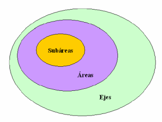
Başlangıç ISDIM®, gerekli bilgiyi doğrudan Lineer Proje modülünden alır. Bunun için, proje hesaplaması sırasında oluşturulan pkcvXX.res dosyalarının içeriğine erişmesi gerekir. Lineer Proje modülünün PROJE menüsünde, proje hesaplaması yapılırken bu tür dosyaların oluşturulması için pkcvXX.res Oluştur seçeneğini işaretlemek ve hacimleri yansıtmak için bir güzergaha sahip olmak gerekir. Toprak dengelemesini analiz etmek istediğimiz farklı güzergahların en azından HES, YEN, YHES tuşlarının etkinleştirilmiş olması gerekir. 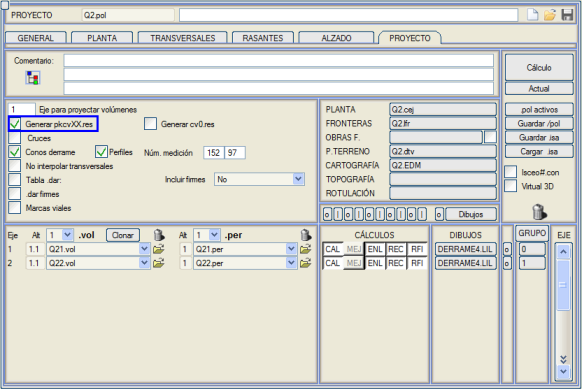
ISDIM® modülü, ENKESİT (ALZADO) menüsünden, MENÜLER VE SEÇENEKLER bölümünden başlatılır. 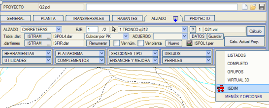
ISDIM® modülünün ana penceresi aşağıdaki gibidir: 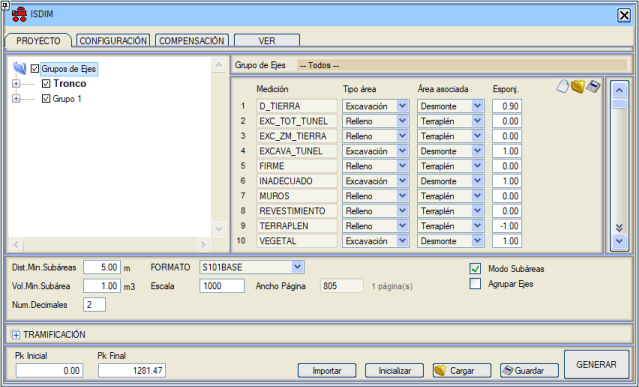
Bu pencere dört bölüme veya menüye ayrılmıştır: PROJE, YAPILANDIRMA, DENGELEME ve GÖRÜNÜM. YAPILANDIRMA bölümü, proje oluşturulduğunda adını DEĞİŞTİR olarak değiştirecektir, böylece bazı özelliklerin yapılandırılamayacağını dikkate alırız. Proje Menüsü PROJE menüsünde, pencerenin sol tarafında Lineer Proje modülünden alınan güzergah gruplarını içeren bir ağaç gösterilir. Her güzergah grubu bir veya daha fazla bireysel güzergahtan oluşacaktır. ISDIM® her güzergah grubunu tek bir varlık olarak ele alacaktır. Pencerenin sağ tarafında, her bir güzergah grubuyla ilişkili pkcvXXX.res dosyalarında bulunan metrajlar, ISDIM® alanlarına atama ile birlikte gösterilir. Modüle ilk kez girildiğinde, metrajın alan tipine bağlı olarak, Kazı alan tipi için Yarma alanı ve Dolgu alan tipi için Dolgu alanı atanarak varsayılan bir atama yapılır. 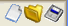 Bu atamayı değiştirebilir, ayrıca bu veya diğer projelerde daha sonra kullanmak üzere kaydedebiliriz. Bu metraj atama penceresinin sağ üst köşesinde, bu eylemleri gerçekleştirmek için üç butonumuz bulunmaktadır (Yeni atama, Atama yükle ve Atama kaydet). Eğer ağaçta Güzergah Grupları düğümünü seçmişsek, metraj ataması tüm güzergah grupları için eşit olarak yapılacaktır. Belirli bir güzergah grubu düğümünü (örneğin Ana Güzergah) seçersek, metraj ataması sadece o güzergah grubu için yapılacaktır. Bu, metrajları ISDIM® alanlarına atarken bize büyük bir esneklik sağlar. Metraj ataması tamamlandıktan sonra, ISDIM® projesini oluşturmaya geçebiliriz. Bunun için sağ alt köşede bulunan OLUŞTUR butonuna basmak yeterlidir. Oluşturma işlemi tamamlandıktan sonra, oluşturma sonucu grafik penceresinde gösterilecektir; burada ilgili güzergahlar boyunca, yarma alt alanlarını simgeleyen yeşil renkli dikdörtgenler ve dolgu alt alanlarını simgeleyen kırmızı renkli dikdörtgenler çizilir. Proje oluşturulurken herhangi bir güzergahı veya güzergah grubunu dikkate almak istemiyorsak, ağaçtaki düğümü devre dışı bırakmak yeterlidir. Ana güzergah grubu, önemi nedeniyle devre dışı bırakılamaz. Projenin oluşturulması için, program varsayılan olarak, daha sonraki toprak dengeleme sürecini yönlendirecek olan önceden belirlenmiş bir dengeleme ilişkileri yapılandırması kullanır. Bu ilişkiler Yapılandırma menüsü içinde düzenlenebilir. Bunu proje oluşturmadan önce yapmalıyız, çünkü bir kez oluşturulduktan sonra bu ilişkileri değiştiremeyiz. Proje penceresinin alt kısmında, projeyi Kaydetmemize/Yüklememize ve Sıfırlamamıza (daha önce oluşturulmuş tüm yapıyı boşaltır) olanak tanıyan bir dizi kutucuk bulunur. Ayrıca, ISDIM® projesini, Dosya > Çizimi farklı kaydet... açılır menüsünden ISTRAM®/ISPOL®'ün EDM formatına aktarabiliriz, böylece o modülde daha sonraki işlemler (pafta basımı, DXF, DGN formatına aktarma vb.) için kullanılabilir. Kullanılan çizgi stilleri L705'ten L719'a kadar, etiketler ise R33'ten R42'ye kadardır. Bu elemanların tanımından yola çıkarak, kullanıcının ilgisini çeken katmanların tanımıyla kendi kütüphanesi oluşturulabilir. Bu butonların üzerinde, ISDIM® projesinin oluşturulacağı pafta boyutunu seçmemize olanak tanıyan Pafta boyutu seçenekleri ve projenin alt alanlarını oluştururken dikkate alınacak minimum metre cinsinden değeri belirtmemize olanak tanıyan Min.Mes.AltAlanlar seçeneği bulunur. Yani, başka bir alt alandan o değerden daha az bir mesafede bulunan yeni bir alt alan oluşturulmayacak, bunun yerine aynı alt alan olduğu kabul edilerek hacmi ona eklenecektir. Ondalık Sayısı kutucuğundan, toprak dengeleme listelerinde ve farklı alan ve alt alanların parametrelerinin yapılandırılmasında görünecek ondalık sayısını belirtebiliriz. Sınır olarak dört ondalık basamak belirlenmiştir. Projenin yatay veya dikey olarak temsil edileceği Yönlendirme seçilebilir. Alt Alanlar Modu. Bu seçenek devre dışı bırakıldığında, oluşturulan proje tüm km bilgilerini saklar. Etkinleştirildiğinde, bulunan metrajlar alt alanlarda gruplandırılır, böylece saklanan bilgi miktarı azalır, bu da işlemlerin daha hızlı gerçekleştirilmesini sağlar. Dengeleme süreci her durumda farklıdır. Bilgisayarımızın klavyesindeki F4 komutuyla, proje bloklarının görüntülenmesi sırasında bize yardımcı olabilecek bir haç şeklinde bir bilgi yankısı gösterilecektir. Komut satırında haç tarafından işaretlenen KM'yi takip edebiliriz. ARALIKLARA BÖLME: kullanıcı tarafından belirtilen belirli bir aralıkta kesimler oluşturur. Otomatik aralıklara bölme ile belirli bir aralıkta kesimler yapabiliriz. 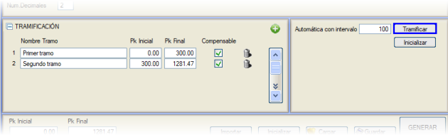
Yapılandırma Menüsü Bu menü, proje oluşturulduğunda adını DEĞİŞTİR olarak değiştirecektir, böylece proje oluşturulduktan sonra bazı özelliklerin yapılandırılamayacağını dikkate alırız. 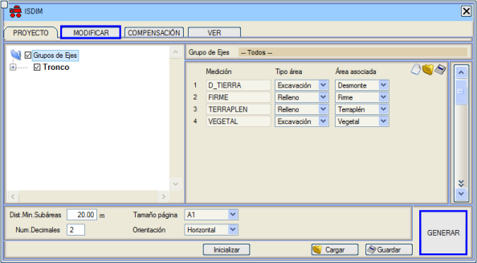
Proje Oluşturulduktan sonra, Dengeleme İlişkilerindeki yüzdeleri değiştiremem. Bu menüde üç bölümümüz var: Metrajlar, Alanlar ve Tip Elemanlar. 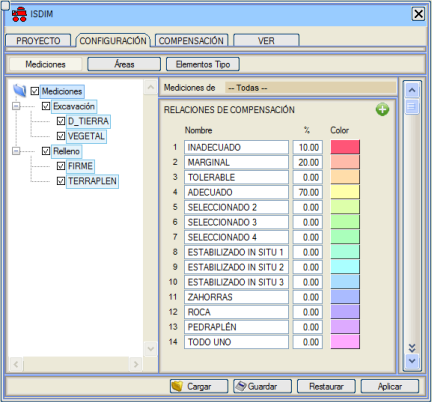
Metrajlar bölümünde, her bir metraj türüyle ilişkili dengeleme ilişkilerini ve bunların değiştirilmesini görüntüleyebiliriz.ISDIM®, iki alt alan arasında malzeme hareketi olabilmesi için, bu alt alanların ortak bir malzeme özelliğine sahip olması gerektiğini, yani aynı dengeleme ilişkisinden mevcut hacme sahip olmaları gerektiğini varsayar. 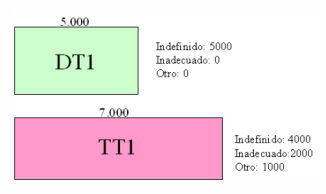
Yukarıdaki örnekte DT1 ve TT1 alt alanları, Tanımsız dengeleme ilişkisiyle 4000'lik bir hacmi dengeleyebilir. 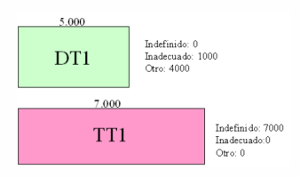
Bu diğer örnekte, iki alt alanın ortak dengeleme ilişkileri olmadığı için hiçbir malzeme dengeleyemezler. Tüm alt alanların, başlangıçta ait oldukları alanlarda belirlenenlere göre ilişkilerinde hacim yüzdelerine sahip olacak olan dengeleme ilişkileri vardır, ancak daha sonra kullanıcı bu değerleri her bir alt alan için bağımsız olarak değiştirebilir. Adını, her birinin yüzdesini, grafikte temsil edilecekleri rengi değiştirebilir ve yeni ilişkiler ekleyebiliriz. ISDIM® varsayılan olarak bir dizi ilişki sağlar, bunlar silinemez, ancak adları, yüzdeleri ve temsil renkleri değiştirilebilir. Kullanıcı tarafından oluşturulan ilişkiler ise silinebilir. Yapılandırma penceresinin sol tarafında, projede bulunan farklı metrajları, Kazı veya Dolgu türlerine göre sınıflandırılmış bir ağaç gösterilir. Ağaçta seçtiğimiz düğüme bağlı olarak, dengeleme ilişkilerinde yapılan değişiklikler tek bir metrajı veya birkaçını etkileyecektir. Yani, ağaçta tek bir metraj seçmişsek (örneğin, YARMA_TOPRAK), yapılan değişiklikler sadece bu metrajı etkileyecektir. Buna karşılık, daha üst düzey bir düğüm seçmişsek (örneğin, Dolgu), yapılan değişiklikler o metraj türüne ait tüm metrajları etkileyecektir. Ve ağacın ana düğümü (Metrajlar) seçilirse, yapılan değişiklikler projenin tüm metrajlarını etkileyecektir. 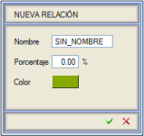Yeni bir ilişki eklemek için  butonuna tıklarız, böylece yeni ilişkinin verilerini girebileceğimiz yeni bir pencere açılır. Dengeleme ilişkisinin grafik penceresinde temsil edileceği rengi seçmek için, ISTRAM®/ISPOL®'ün renk paleti gösterilecektir. butonuna tıklarız, böylece yeni ilişkinin verilerini girebileceğimiz yeni bir pencere açılır. Dengeleme ilişkisinin grafik penceresinde temsil edileceği rengi seçmek için, ISTRAM®/ISPOL®'ün renk paleti gösterilecektir.Kullanıcı tarafından oluşturulan bir ilişkiyi silmek için, silmek istediğimiz ilişkinin sağında bulunan  butonuna tıklarız. butonuna tıklarız.Yüzde değerlerini değiştirirken dikkatli olmalıyız, çünkü toplam toplamın %100 olması gerekir. İlgili değişiklikler yapıldıktan sonra, projenin oluşturulması sırasında bu andan itibaren uygulanmasını onaylamak için Uygula butonuna basmalıyız. Geri Yükle butonuna basarak, orijinal değerler geri yüklenecektir. Yükle/Kaydet seçenekleriyle, bu yapılandırmayı içeren bir dosya, bu veya diğer projelerde daha sonra kullanılmak üzere kaydedilebilir. Bu bölümde ISDIM® projesinin alanları tanımlanır. Pencerenin sol tarafında proje güzergahlarını içeren bir ağaç gösterilir ve sağında her bir güzergahın oluştuğu alanlar gösterilir. Tek bir güzergahın düğümünü seçersek, o güzergahın alanları gösterilir ve ağacın başlangıç düğümünü (Güzergah Grupları) seçersek, projenin tüm güzergahlarının alanları gösterilir. Bu pencerede yeni alanlar ekleyebilir, mevcut olanları değiştirebilir ve projede kullanmak istemediklerimizi silebiliriz. Varsayılan olarak, ISDIM® projenin tüm güzergahlarında Yarma, Dolgu ve Zayıf Zemin Kazısı alanlarını oluşturur. İlk ikisi sabittir ve silinemez. Ayrıca, Ariyet ve Depo olarak adlandırılan iki özel güzergah da oluşturulur ve bunlar aynı adda tek bir alana sahiptir. Bu özel güzergahların veya projenin oluştuğu diğer güzergahların kullanılmasını istemiyorsak, ağaçta devre dışı bırakılabilirler, böylece proje oluşturulurken dikkate alınmazlar. Ana güzergah, önemi nedeniyle devre dışı bırakılamaz. 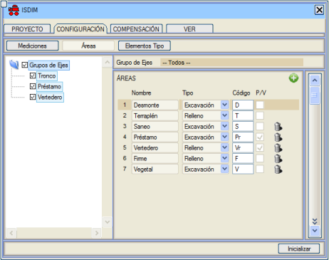
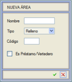Yeni bir alan eklemek için butonuna tıklarız, böylece yeni alanın verilerini girebileceğimiz yeni bir pencere açılır. Adını, Tipini (Kazı mı yoksa Dolgu mu olduğunu) ve projenin alt alanlarını adlandırmak için kullanılacak olan alfabetik bir Kodu (bu koda sayısal bir sonek eklenir) belirteceğiz. Ariyet/Depo'dur kutucuğunu etkinleştirerek, alanın özel bir ariyet veya depo alanı gibi davranıp davranmayacağını belirteceğiz. Butona tıklayarak ilgili alanı sileceğiz.Tüm alanlar tanımlandıktan sonra, yapılan değişikliklerin dikkate alınması için Uygula kutucuğuna tıklayacağız. Geri Yükle kutucuğuna tıklayarak, orijinal değerler geri yüklenecektir. Bu bölümde, projenin ana güzergahına tip elemanlar (viyadükler, tüneller vb.) kaydetmek mümkündür. Tip elemanlar, bir tip eleman sınıfına ait olacaktır. Aşağıdaki sınıflar ve bunlara karşılık gelen tip elemanlar mevcuttur:
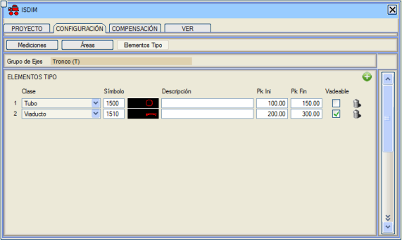
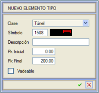Bir tip eleman eklemek için butonuna tıklarız, böylece yeni tip elemanın verilerini girebileceğimiz yeni bir pencere açılır. İlgili açılır menüden tip elemanın Sınıfını seçeceğiz, istersek bir Açıklama gireceğiz (bu, aşağıdaki şekilde görülebileceği gibi, grafik penceresinde tip elemanın sembolüyle birlikte gösterilecektir) ve Başlangıç KM ile Bitiş KM'yi gireceğiz. Geçilebilir kutucuğunu etkinleştirerek, projeye o tip elemanın aşılabilir veya erişilebilir olduğunu belirtiriz, bu da toprak dengeleme hesaplaması yapılırken dikkate alınacaktır. Tüm bu veriler herhangi bir zamanda değiştirilebilir. butonuna tıklayarak ilgili tip elemanı sileceğiz.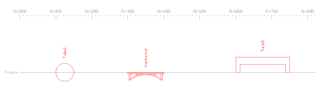
Proje oluşturulduktan sonra, birçok özelliğini değiştirebiliriz. Bunu Değiştir bölümünden yapabiliriz. Bu menüde iki bölümümüz var: Güzergahlar/Alanlar ve Alt Alanlar. Bu bölümde, projenin alt alanlarının dengeleme ilişkilerini ve kazılabilirlik özelliklerini bireysel düzeyde, ayrıca belirli bir güzergah veya alanın tamamı için görebilir ve düzenleyebiliriz. Kazılabilirlik özellikleri (kabarma katsayısı), başlangıçta Lineer Proje modülünün metrajlarından elde edilir. 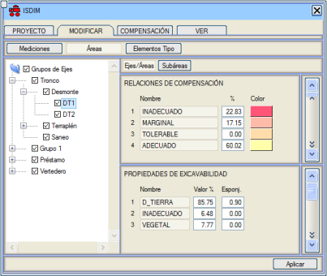
Ağaçta seçtiğimiz düğüme bağlı olarak, dengeleme ilişkilerinde ve kazılabilirlik özelliklerinde yapılan değişiklikler tek bir alt alanı veya birkaçını etkileyecektir. Yani, ağaçta tek bir alt alan seçmişsek (örneğin, DT1), yapılan değişiklikler sadece bu alt alanı etkileyecektir. Buna karşılık, daha üst düzey bir düğüm seçmişsek (örneğin, Yarma), yapılan değişiklikler o düğüme bağlı tüm alt alanları (bu durumda, ana güzergahın tüm yarma alt alanları) etkileyecektir. Ve ağacın ana düğümü (Güzergah Grupları) seçilirse, yapılan değişiklikler projenin tüm alt alanlarını etkileyecektir. Yüzde değerlerini değiştirirken dikkatli olmalıyız, çünkü toplam toplamın %100 olması gerekir. İlgili değişiklikler yapıldıktan sonra, yapılan değişiklikleri onaylamak için Uygula butonuna basmalıyız. Bu bölümde, projenin alt alanlarının verilerini, ayrıca dengeleme ilişkilerini ve kazılabilirlik özelliklerini görebilir ve düzenleyebiliriz. Önceki bölümden farklı olarak, tam bir güzergah veya alan seçmeye izin verilmez, sadece bireysel alt alanlar seçilebilir. Bu pencereye, grafik penceresinde istenen alt alanın üzerine farenin sağ tuşuyla tıklayarak da erişilebilir. 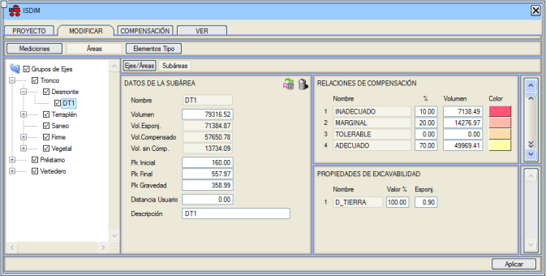
Alt alanın tüm verileri düzenlenemez. Alt alanın Hacmini, KM değerlerini ve hatta o alt alana ulaşmak için kat edilmesi gereken ek bir mesafe olan bir Kullanıcı Mesafesi bile verebiliriz. İlgili değişiklikler yapıldıktan sonra, yapılan değişiklikleri onaylamak için Uygula kutucuğuna basmalıyız. kutucuğuna tıklayarak seçilen alt alanın içeriğini sileriz. Bu işlem  komutuyla geri alınabilir. komutuyla geri alınabilir.Dengeleme ilişkilerini Dengeleme sekmesinden Yürüttüğümüz anda, malzemelerin farklı dengelemeleri gerçekleştirilecektir. Bu noktada belirli bir alt alana konumlanabilir ve ekranda farenin sağ tuşuyla tıklayarak o alt alanı dengelemeden çıkarabiliriz veya simgesine tıklayarak da yapabiliriz. Bir alt alanı dengeden çıkarırken, dengelemede yer alan tüm bölümleri içeren bir diyalog kutusu gösterilir ve silmek istediklerimizi seçebiliriz. 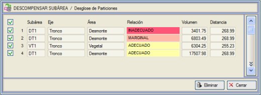
Ariyet/Depo alanlarında, ihtiyacımız olan ariyet veya depo alt alanlarını manuel olarak ekleyebiliriz. Bunun için, ağaçta ilgili alanı seçeceğiz ve ALT ALAN VERİLERİ penceresindeki butonuna tıklayarak, söz konusu ariyet/depo verilerini (hacim, güzergaha giriş kilometresi, kullanıcı mesafesi) girebileceğimiz yeni bir pencere gösterilecektir. Alt alan oluşturulduktan sonra, dengeleme ilişkilerini projenin ihtiyaçlarına göre düzenleyebiliriz. Dengeleme Menüsü Proje oluşturulduktan sonra, toprak dengeleme hesaplamasını yapmaya başlayabiliriz. Dengeleme menüsü, projeyi oluşturduğumuz moda göre (Alt Alanlar Modu seçeneği etkin veya değil) farklıdır. Alt Alanlar Modu kullanılmadığı durum için, Dengeleme Menüsü KM Modu noktasına bakınız. Dengeleme menüsünde, öncelikle gerçekleştirmek istediğimiz dengeleme türünü seçeceğiz ve BAŞLAT kutucuğuna tıklayacağız. Dengeleme işlemi tamamlandıktan sonra, dengelenmiş malzeme ve dengelenmeyi bekleyen malzeme ile bir özet oluşturulacaktır; bu özete Sonuçlar seçeneğiyle ulaşılabilir. Herhangi bir dengeleme türü yapıldıktan sonra, dengeleme eğrisini görselleştirmek ilginçtir. Dengelemeyi Kaldır seçeneğiyle, yapılan tüm dengelemeler silinecektir, böylece sıfırdan yeni bir dengeleme sürecine başlayabiliriz, aksi takdirde en son yapılan dengelemeden devam edilecektir. 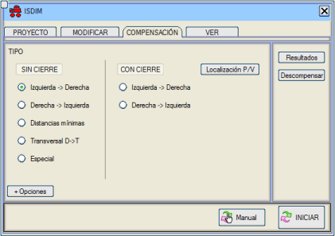
+Seçenekler kutucuğundan maksimum ve minimum Taşıma değerlerini tanımlayabiliriz: 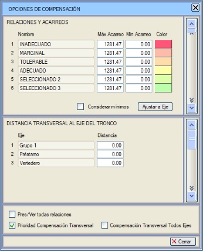
Bu İlişkiler ve Taşımalar tablosu aracılığıyla, her bir dengeleme ilişkisi için minimum ve maksimum malzeme taşıma mesafelerini yapılandırabiliriz. Bu şekilde, belirli bir ilişkiye sahip iki alt alan, onları dengelemek için kat edilmesi gereken mesafe, yapılandırılmış minimum mesafeden daha az ise veya bu mesafe yapılandırılmış maksimum mesafeden daha büyük ise birbirleriyle dengeleme yapamazlar. Minimum taşıma mesafesinin dikkate alınması için, Minimumları Dikkate Al bayrağı etkinleştirilmelidir, aksi takdirde sadece maksimum taşıma değeri dikkate alınacaktır. Bu pencerede ayrıca her bir dengeleme ilişkisinin temsil rengi de yapılandırılabilir. Ekseni Ayarla butonuna tıklayarak, Maks.Taşıma sütunu projenin bitiş kilometresi ile otomatik olarak doldurulacaktır. [ ] Tüm ilişkiler Ariyet/Depo seçeneğini etkinleştirerek, her türlü malzemenin ariyete veya depoya gitmesini sağlarız. Etkinleştirilmediği takdirde, sadece ariyette/depoda bulunan aynı ilişkideki malzeme ariyete/depoya gidecektir. [ ] Tüm Güzergahlarda Enine Dengeleme seçeneğini etkinleştirmek, enine dengelemede, farklı güzergahlarda bulunan alt alanlar arasında, birinin ağırlık merkezinin diğerinin sınırları içinde olması koşulunu sağladıkları sürece toprak hareketleri yapılmasına olanak tanır. Bu seçenek etkinleştirilmezse, sadece aynı güzergahın alt alanları arasında toprak hareketleri olacaktır. Dengeleme yapılırken, hesaplamada belirli proje elemanlarının (güzergahlar, alanlar veya alt alanlar) dikkate alınmasını istemiyorsak, alanlar/alt alanlar ağacında ilgili düğümleri etkinleştirebilir/devre dışı bırakabiliriz. Ana güzergah tamamen devre dışı bırakılamaz, ancak alanları/alt alanları devre dışı bırakılabilir. Manuel komutu ile bir kazı alt alanından bir dolgu alt alanına manuel dengelemeler yapmamızı sağlar. Bu tür bir dengelemede dengelenmek istenen hacmi belirtmeye izin verilir. Başlangıçta bu değer, kaynak alt alanın dengelenmeyi bekleyen hacmiyle aynıdır. 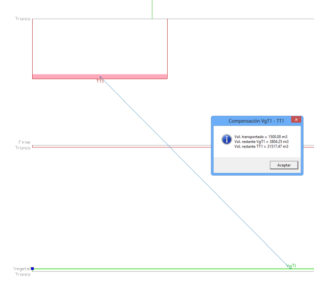
ISDIM®, aşağıda açıklamaya geçtiğimiz farklı dengeleme algoritmalarına sahiptir. Bu dengeleme türünde, dolgu blokları (alt alanlar) soldan sağa artan km sırasıyla taranır ve her biri kendisine en yakın yarma bloğu ile doldurulur. Bloklar arasındaki mesafeyi ölçmek için ağırlık merkezi km'leri dikkate alınır. Malzeme artarsa veya eksik kalırsa, uygulama yeni bloklar oluşturmaz. Bu dengeleme, bir öncekiyle aynıdır, ancak bu süreçte dolgu blokları sağdan sola azalan km sırasıyla taranır ve her biri kendisine en yakın yarma bloğu ile doldurulur. Bu dengelemede, yarma-dolgu alt alan çiftlerinin aralarındaki mesafeye göre önceden bir sıralaması yapılır ve en küçük mesafeden en büyüğe doğru dengeleme yapılır. Yarma ve dolgu alanlarının dengelemesi, aynı güzergahın alt alanları için ve birinin ağırlık merkezi diğerinin sınırları içinde olacak şekilde gerçekleştirilir. Bu dengelemede, ilk olarak sadece ana güzergahın mı yoksa tüm projenin mi yarmalarını kullanmak istediğimizi sorar. Ardından, dengeleme, toprak denge eğrisini (dengeleme eğrisi) takip ederek şu şekilde gerçekleştirilir: bu eğrinin pozitif olduğu kesimlerde, dengeleme soldan sağa yapılır ve eğrinin negatif olduğu durumlarda, dengeleme sağdan sola yapılır. Bu tür bir dengeleme yapmak için, öncelikle olası ariyet ve depo yerlerinin kesimlerini tanımlamamız gerekir. Bunun için, A/D Konumu butonuna tıklarız, böylece yeni bir pencereye erişiriz. Tanımladığımız olası ariyet ve depo yerlerinin kesimlerini kaydedebilir/yükleyebiliriz. 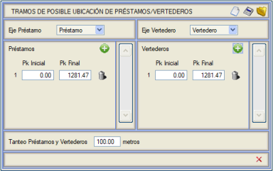
Bu pencerede, açılır menüden gösterilenler arasından Ariyet Güzergahını seçeriz, böylece ISDIM® gerekirse bir ariyet alt alanı ekleyebileceği güzergahı bilir. Ardından, butonuna tıklayarak bir ariyet oluşturmak için geçerli olası kesimleri belirtmeye geçeriz. Bu butona her tıkladığımızda, listeye yeni bir kesim eklenecektir. Artık sadece Başlangıç KM ve Bitiş KM alanlarını kesimin istenen değerleriyle doldurmamız gerekiyor. Bu listede görünen kesimlerin dışında hiçbir ariyet yerleştirmeye çalışılmayacaktır. butonuna tıklarsak ilgili kesim silinecektir.Aynı işlemi depo durumunda da yapacağız. Ariyet ve Depo Denemesi alanında, malzeme hareketini en aza indiren en uygun yeri bulana kadar deneme yapmak için geçerli kesimlerde bir ariyet/deponun ne kadar aralıkla yerleştirilebileceğini metre cinsinden bir değerle belirteceğiz. Program, projenin büyüklüğüne bağlı olarak varsayılan bir değer sunar. Kapanışsız otomatik dengeleme durumunda olduğu gibi, kapanışlı dengelemede de iki olasılık vardır: soldan sağa ve sağdan sola. Bu dengeleme türünde, dolgu blokları soldan sağa artan km sırasıyla taranır ve her biri kendisine en yakın yarma bloğu ile doldurulur. Toprak hacimleri diyagramının dengelenmesi için en uygun durumda bir ariyet ve/veya bir depo eklenecektir. Bu dengeleme türünde, dolgu blokları sağdan sola azalan km sırasıyla taranır ve her biri kendisine en yakın yarma bloğu ile doldurulur. Toprak hacimleri diyagramının dengelenmesi için en uygun durumda bir ariyet ve/veya bir depo eklenecektir. Sonuçlar ve Raporlar Dengeleme işlemi tamamlandıktan sonra, dengelenmiş malzeme ve dengelenmeyi bekleyen malzeme ile bir özet oluşturulacaktır; bu özete Sonuçlar seçeneğiyle ulaşılabilir. 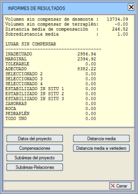
Ayrıca, ISDIM® bize dengeleme sonuçlarını detaylı bir şekilde gösteren bir dizi rapor sunar. Bunun için, görüntülemek istediğimiz rapor türünü seçmek yeterlidir, böylece o raporla birlikte not defteri açılır ve istenirse daha sonra yazdırılabilir. Bu raporda proje, mesafe etütleri vb. hakkında veriler gösterilir. Bu raporun oluşturulması için bir başlangıç ek mesafe değeri ve metre cinsinden bir aralık değeri girmemiz istenir. Ek mesafe, başlangıç ek mesafe değeriyle belirtilen sınırı aşan toprak hareketine verilen bir cezadır ve başlangıç değerinden itibaren aşılan her aralık için artacaktır. /isdim/informes klasöründe bir datosProyecto.txt dosyası oluşturur.  Bu raporda, farklı alt alanlar arasındaki mevcut farklı dengelemeler gösterilir. /isdim/informes klasöründe bir compensaciones.txt dosyası oluşturur. 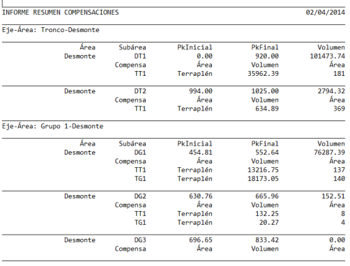
Bu raporda, projenin farklı alt alanları hakkında bilgi gösterilir. /isdim/informes klasöründe bir subareas.txt dosyası oluşturur. 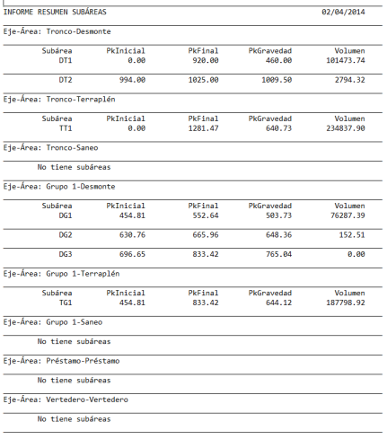
Bu raporda, her bir dengeleme ilişkisine karşılık gelen malzeme alt alanlara göre ayrıştırılır. /isdim/informes klasöründe bir subareas_relaciones.txt dosyası oluşturur.  Bu raporda, her bir kaynak alt alanından hedefine olan ortalama taşıma mesafesi belirtilir. /isdim/informes klasöründe bir distanciaMedia.txt dosyası oluşturur. 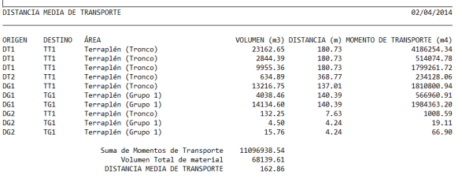
Bu raporda, depolara olan ortalama taşıma mesafesi belirtilir. /isdim/informes klasöründe bir distanciaMediaVr.txt dosyası oluşturur. 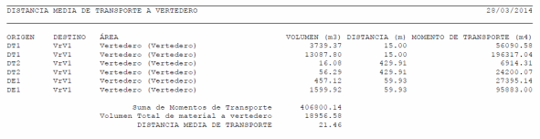
Bu raporda, dengelenmemiş kalan alt alanların hacmini içeren liste oluşturulur.  Dengeleme Menüsü KM Modu Bu moddaki dengeleme süreci, Alt Alanlar Modu'ndan tamamen farklıdır. Burada, km'ler sırayla taranır ve her bir alanın hacmi km'den km'ye dengelenir. 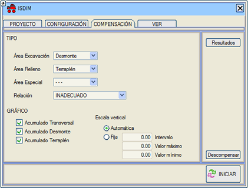
Öncelikle, ilgili açılır menüler aracılığıyla dengelemek istediğimiz alanları seçeceğiz. Bir kazı alanı, bir dolgu alanı ve isteğe bağlı olarak özel bir alan (ariyet ve depolar) seçebiliriz. Ayrıca, dengeleme yapılırken dikkate alınmasını istediğimiz dengeleme ilişkisini de belirteceğiz. Bu şekilde, sadece aynı dengeleme ilişkisini paylaşan alanlar arasında hacim dengelenecektir. BAŞLAT butonuna tıklayarak dengeleme süreci başlayacaktır. 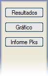 Dengeleme işlemi tamamlandıktan sonra, dengelenmiş ve dengelenmeyi bekleyen malzeme ile bir özet oluşturulacaktır; bu özete Sonuçlar seçeneğiyle ulaşılabilir. Ayrıca, KM Raporu butonuna tıklayarak erişebileceğimiz detaylı bir metin formatında bir rapor da oluşturulur. Grafik seçeneğiyle, dengeleme grafiğinin gösterimini etkinleştirebilir/devre dışı bırakabiliriz. Bu seçenekler sadece dengeleme çalıştırıldıktan sonra kullanılabilir. 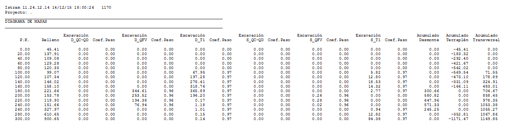 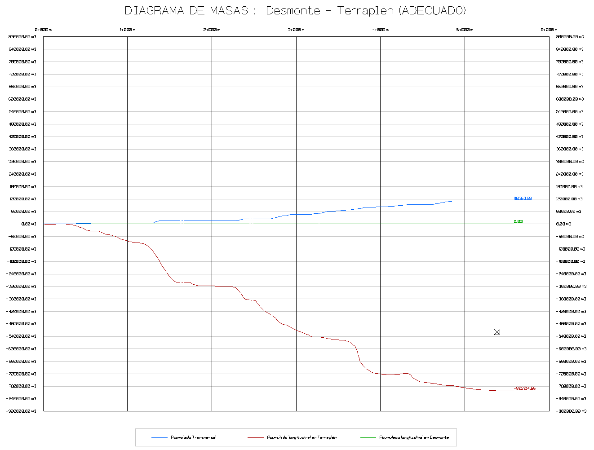 Dengeleme menüsünün GRAFİK bölümünde, grafiğin farklı eğrilerinin gösterimini etkinleştirebilir/devre dışı bırakabilir, ayrıca dikey ölçeğin aralığını belirleyebilir veya otomatik olarak hesaplanmasını sağlayabiliriz. Dengelemeyi Kaldır seçeneğiyle, yapılan tüm dengelemeler silinecektir. Görünüm Menüsü GÖRÜNÜM sekmesini seçerek, farklı elemanların ve özelliklerin gösterimini etkinleştirebileceğimiz/devre dışı bırakabileceğimiz bir menüye erişiriz. 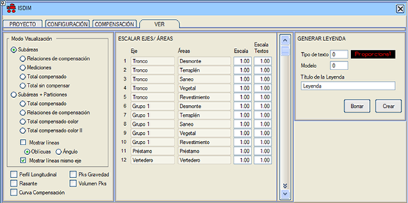
Bu seçenek etkinleştirildiğinde, her bir alt alanın sahip olduğu farklı dengeleme ilişkileri ilgili renkleriyle birlikte gösterilir. 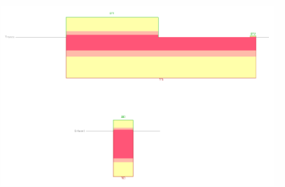
Bu seçenek etkinleştirildiğinde, her bir alt alanın farklı metrajları gösterilir. 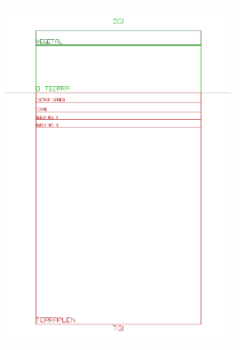
Bu seçenek etkinleştirildiğinde, dolgu alt alanlarında dengelenen hacim soluk pembe bir dolguyla ve yarma alt alanlarında dengelenen hacim soluk yeşil renkle gösterilir. Herhangi bir alt alan parçasının dolgusuz görünmesi, tüm malzemenin dengelenemediğini gösterir. 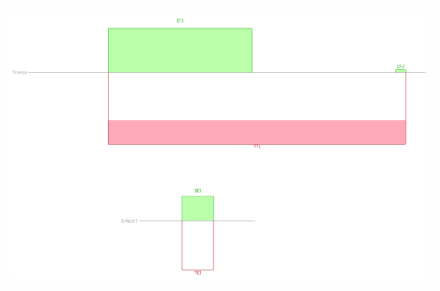
Bu seçenek etkinleştirildiğinde, dengelenmemiş kalan alt alanların hacmi gösterilir. 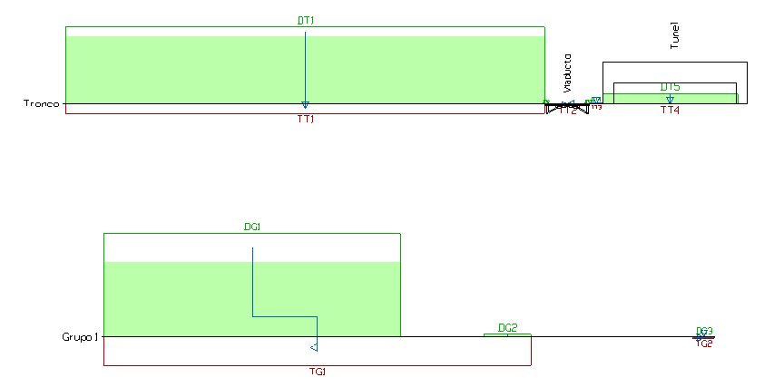
Bu seçenek etkinleştirildiğinde, yarma alt alanları ile dengeledikleri dolgu alt alanları arasındaki birleşim gösterilir. Ayrıca, bir alt alan birkaç alanla dengeleniyorsa, o alt alanda bu alt alanlarla dengelenen hacim bölümleri işaretlenir. 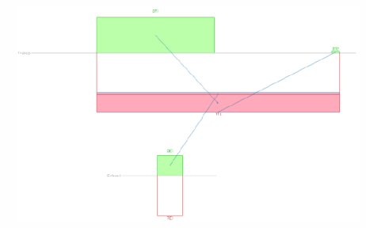
Bu seçenek etkinleştirildiğinde, dengelenmiş bölümler, ait oldukları dengeleme ilişkisinin rengiyle doldurularak gösterilir. Bir bölümün birkaç farklı ilişkisi olması durumunda, bölüm gri renkte boyanır. Bu seçenek etkinleştirilirse, otomatik olarak Bölümler seçeneği de etkinleştirilir. Aynı şekilde, Bölümler seçeneği devre dışı bırakılırsa, Dolgulu Bölümler seçeneği de otomatik olarak devre dışı bırakılır. 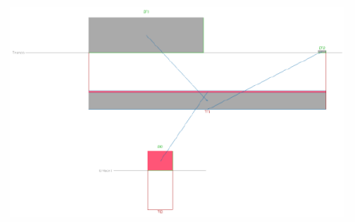
Bu seçenek etkinleştirildiğinde, projenin boykesitini temsil eden grafik, açık kahverengi noktalı bir çizgiyle gösterilir. Profil verileri, Lineer Proje modülünden otomatik olarak alınır. 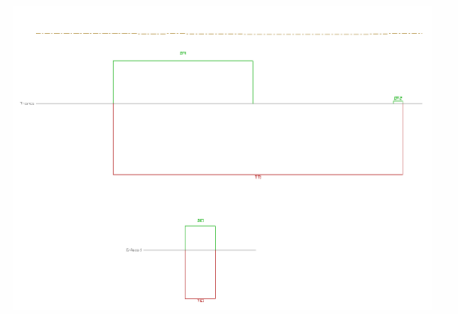
Bu seçenek etkinleştirildiğinde, projenin kırmızı kotunu temsil eden grafik, açık mavi noktalı bir çizgiyle gösterilir. Kırmızı kot verileri, Lineer Proje modülünden otomatik olarak alınır. 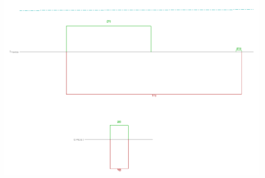
Bu seçenek etkinleştirildiğinde, toprak hacimleri diyagramının dengeleme eğrisini temsil eden grafik, macenta renkli noktalı bir çizgiyle gösterilir. 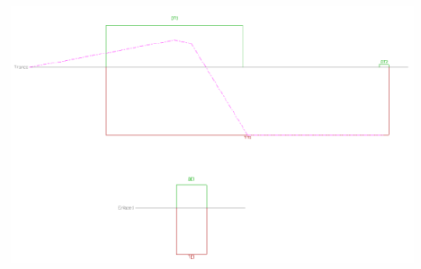
Bu seçenek etkinleştirildiğinde, her bir alt alanda ağırlık merkezi kilometresi gösterilir. 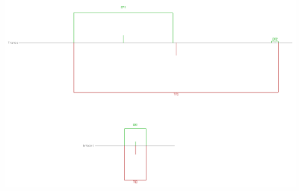
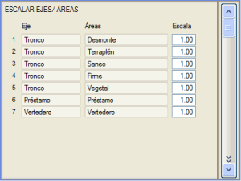
Oluştur komutuyla, projenin farklı dengeleme ilişkileri için grafik penceresinde bir lejant oluşturabiliriz.
|